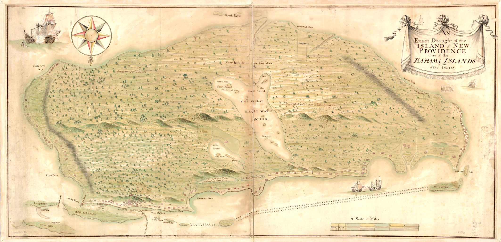

Zatoka Piratów
Cieszą się opinią romantycznych łajdaków, budzących grozę śmiałków, którzy odważyli się obrać ścieżkę biegnącą poza zasięgiem prawa i władz, wyzwolonych z okowów żmudnej, codzienniej pracy; nieustraszonych, którym udało się zerwać więzy, jakimi pętało ich społeczeństwo, i wyruszyć na poszukiwanie bogactw, uciech oraz przygód. Minęły już trzy stulecia, od kiedy zniknęli z mórz, ale piraci złotej ery nadal cieszą się opinią ludowych bohaterów, a ich miłośników nie sposób zliczyć.
Losy piratów z Karaibów to zapomniane już opowieści o tyranii i oporze, morskich buntach, które zatrzęsły posadami nowo uformowanego Imperium Brytyjskiego, paraliżując transatlantycki handel i podsycajac demokratyczne nastroje, co napędzi potem amerykańską rewolucję. Ośrodkiem tych zdarzeń była piracka republika, strefa niczym nieskrępowanej wolności w czasach bezwzględnego autorytaryzmu.
Złota era piractwa trwała tylko dekadę, od 1715 do 1725 roku, a jej architektami byla klika dwudziestu, może trzydziestu wyjętych spod prawa komodorów i paru setek załogantów. Praktycznie wszyscy dowódcy znali się osobiście - albo służyli ramię w ramię na pokładach okrętów handlowych lub łupieżczych, albo ich drogi skrzyżowały się podczas wizyt we wspólnej bazie, niedoszłej kolonii brytyjskiej na Bahamach. I choć większość piratów stanowili Anglicy lub Irlandczycy, nie brakowało posród nich Szkotów, Francuzów i Afrykanów, a także przedstawicieli innych nacji: Holendrów, Duńczyków, Szwedów oraz rdzennych Amerykanów. Pomimo różnic narodowościowych, rasowych, religijnych i językowych udało im się wykształcić wspólną kulturę. Spotykające się na morzu statki pirackie często łączyły siły, sprzymierzajac się, aby nieść pomoc kamratom; działo się tak nawet w przypadku, gdy członkami jednej załogi byli Francuzi, a drugiej znienawidzeni przez nich Anglicy. Na okrętach panowała demokracja, kapitana wybierano przez powszechne głosowanie, łupy dzielono po równo, a kluczowe decyzje podejmowano na otwartych zebraniach, co stało w kontraście do dyktatury obowiązujacej na innych jednostkach. Kiedy zwyczajni żeglarze nie otrzymywali żadnych świadczeń socjalnych, bahamscy piraci wypłacali swoim ludziom renty inwalidzkie.
Piraci istnieli niemal od zawsze. Nie brakowało ich w starożytnej Grecji, w latach świetności Imperium Rzymskiego i podczas rządów dynastii Qing w Chinach. Należy pamiętać, że piraci to nie korsarze; ci drudzy podczas wojny łupili okręty przeciwnika pod egidą swojego rządu. Niektórzy mylnie określają sir Francisa Drake'a i sir Henry'ego Morgana piratami, byli oni bowiem korsarzami właśnie i dokonywali rabunków przy pełnym poparciu królowej Elzbiety oraz króla Karola II. Absolutnie nie uważano ich za wyjętych spod prawa, wręcz przeciwnie, w nagrodę za swoje czyny mogli spodziewać się tytułu szlacheckiego; Morgan został nawet mianowany namiestnikiem na Jamajce. William Dampier również był korsarzem, tak jak większość angielskich bukanierów pod koniec siedemnastego wieku. Niesławny kapitan William Kidd, dobrze urodzony korsarz, piratem został przez przypadek, kiedy poróżnił się z Brytyjska Kompania Wschodnioindyjską, największą ówczesną angielską korporacją.
Piraci złotej ery różnili się znacząco od bukanierów pokolenia Morgana oraz tych, którzy grabili statki przed nimi. Rządy wszystkich krajów, łącznie z ojczyzną, uważały ich za przestępców, a oni, w przeciwieństwie do swoich poprzedników, angażowali się nie tylko w akcje rabunkowe, ale brali udział w społecznych oraz politycznych rewoltach. Byli pośród nich zawodowi żeglarze, zobligowani kontraktami mężczyźni szukający szczęścia w Nowym Świecie oraz uciekinierzy, którzy sprzeciwili sie swoim panom: kapitanom, wlaścicielom okrętów i autokratom z ogromnych amerykańskich i indyjskich plantacji niewolniczych. Zazwyczaj załoga okrętu handlowego była tak niezadowolona z panujących na pokładzie warunków, ze gdy piraci zajmowali statek, tłumnie i z entuzjazmem przyłączano się do grabieżcy. Zdarzało się, iż nawet żołnierze Królewskiej Marynarki dezerterowali; kiedy HMS Phoenix starł się z piratami nieopodal ich siedziby na Bahamach w 1718 roku, grupa brytyjskich żeglarzy wymknęła się w nocy, aby o świcie służyć juz pod czarną banderą. Faktem jest, że do pirackiej ekspansji przyczynili się znacząco dezerterzy, zmęczeni brutalnym i niesprawiedliwym traktowaniem na wojskowych i handlowych okrętach
Jednak piratami nie byli jedynie niezadowoleni marynarze. Całkiem spory odsetek stanowili uciekinierzy, którzy migrowali do pirackiej republiki, szczególnie gdy rozeszło się, że atakowane są także statki niewolnicze, a przetrzymywanych na ich pokładzie ludzi przyjmowano na równych prawach. U szczytu złotej ery zbiegli niewolnicy stanowili czesto czwartą część załogi, a paru Mulatom udało się zostać pełnoprawnymi kapitanami. Piracka obietnica wolności uwierała obszarników korzystających na okalajacych Bahamy plantacjach z przymusowych pracowników; gubernator Bahamów odnotował w 1718 roku: "czarnoskórzy zrobili się ostatnimi czasy tak bezczelni i zuchwali, iż mamy podstawy sądzić, że tym powstaniem [przeciwko nam]... szykuja grunt pod ucieczkę do piratów".